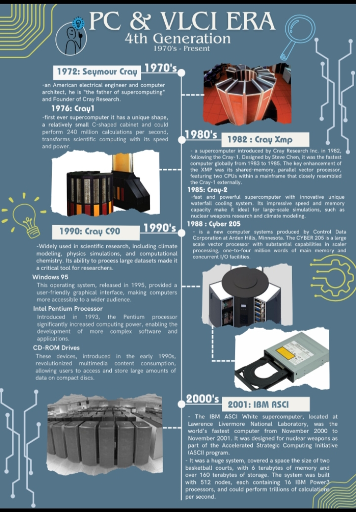
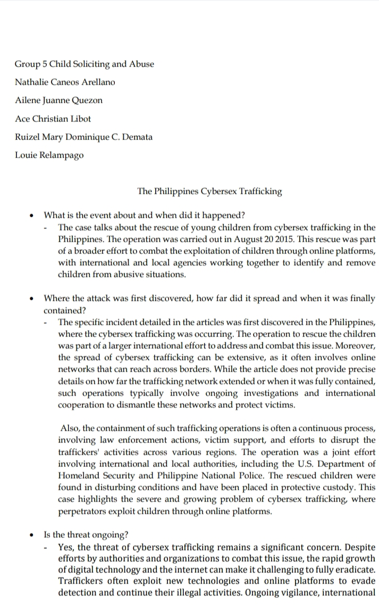
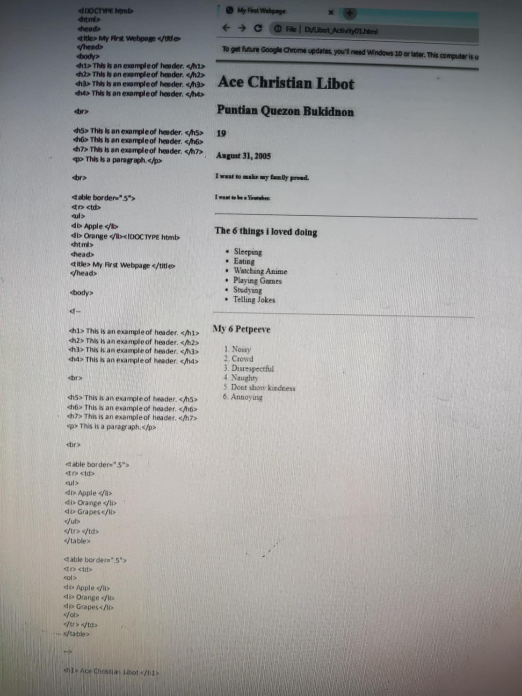
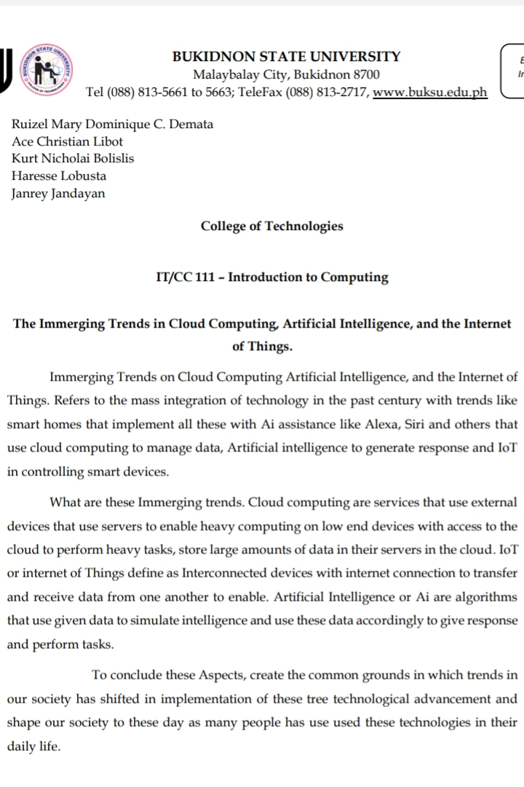
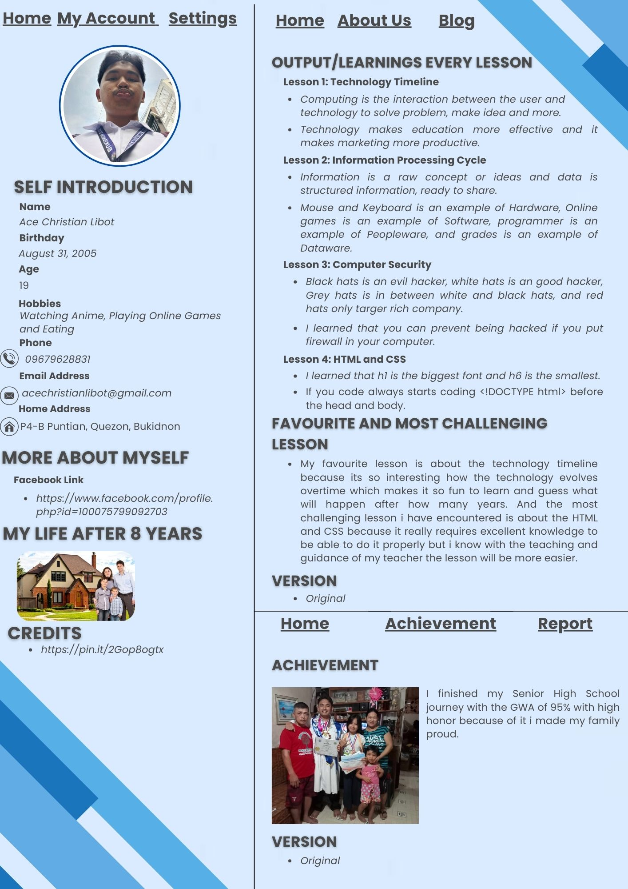

Lesson 1: Technology Timeline to Computing's Impact to Industries
The picture is all about the PC & VLCI ERA. The phrase "PC & VLCi era" describes a period of time when smart city platforms such as VLCi are being increasingly connected with personal computers (PCs). These is where supercomputer is getting popular and the father of supercomputer is Seymour Cray. Through his genius invention everything become faster and efficient.
Lesson 2: Information Processing Cycle and Computer Systems
Computing is the interaction between the user and the technology. The purpose is to solve problem and make our daily life much easier and convenient. Also Information is a raw concept or ideas and data is structured information that is can be share to everyone.
Lesson 3: Introduction to Computer System
Computer System is the one who process everything that human what to be processes. Mouse and Keyboard is an example of Hardware, Online games is an example of Software, programmer is an example of Peopleware, and grades is an example of Dataware.
Lesson 4: Basic Concept of Computer Security
The picture is all about the Philippines Cybersex Trafficking. Cybersex trafficking in the Philippines is a cruel type of contemporary slavery in which minors are abused and forced to perform sexual actions for viewers all over the world. Poverty, ease internet access, and viewer demand, particularly in wealthy countries, all contribute to this exploitation. Victims are frequently children, sometimes newborns, and are frequently used by family members. Through the help of local and international police the rate of this kind of crime is lowering, although not all are captured but atleast its getting less.
Lesson 5: HTML and CSS
This picture is one of my activity about the html and css. Html is for building a website and Css is to make it attractive. The activity is made for us to have a idea about making our website which is very hard. That's why this activity is really helpful to me so that i'll able to finish my website in no time.
Lesson 6: The Internet and World Wide Web
The picture is all about the Immerging Trends in Cloud Computing, Artificial Intelligence, and the Internet of Things. These three technologies are merging, resulting in a future in which our devices, data, and intelligence are all seamlessly linked, fueling innovation and revolutionizing industries. Because of the combination of the three everything now is very easy and free like if you need something to know you can search or ask ai and boom you will get instantly what you want. That's how this day technology is really become so powerful and popular in any countries.
Website Wireframe Portfolio
The picture is all about Website Wireframe. Website Wireframe is like a lesson plan which provide you how would make your website portfolio the design, flow, and more. My website wireframe isn't correct since i really don't know how to make one but still it give me a idea which is really helpful to me and it contribute a lot in making my website.
Bouncing Ball Creation
The picture is all about bouncing ball activity of my subject IT Fundamental. The activity isn't really easy even it is still basic because you must apply the stretch and squash like your applying physics on the ball when it bounce. But with the help of my instructor i made one.
Stick Man Walking Creation
The picture is also my activity of my subject IT Fundamental which is walking stick man. The activity is making a stick man walk which is hard also because like in the bouncing ball you must apply physics like when you walk your knees will be bend so isn't simple. But with the help of my classmate i made one.